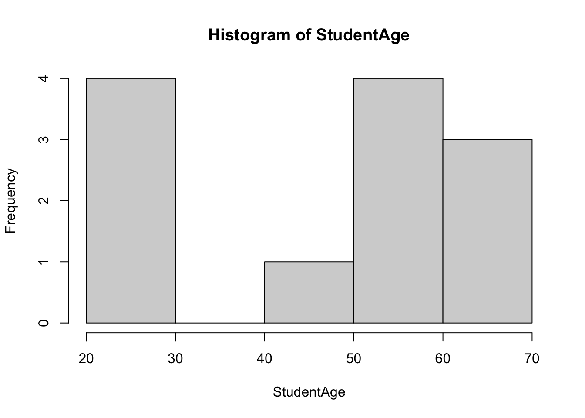
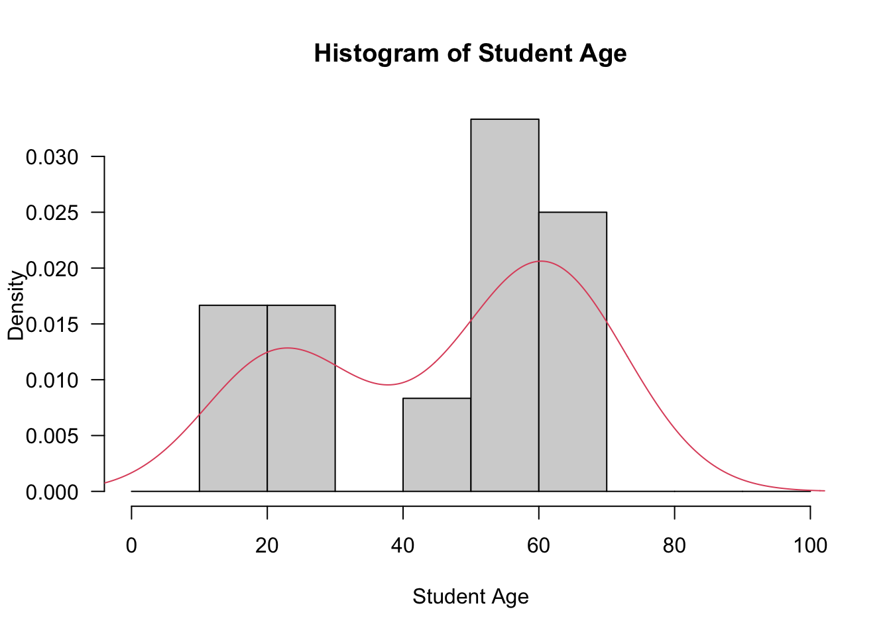
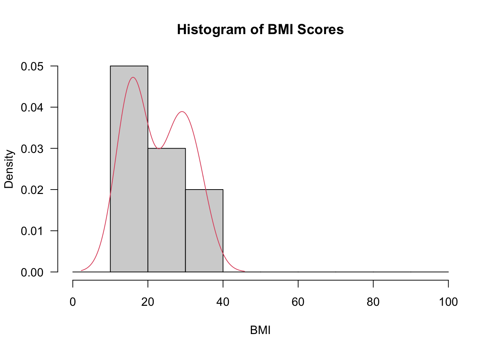
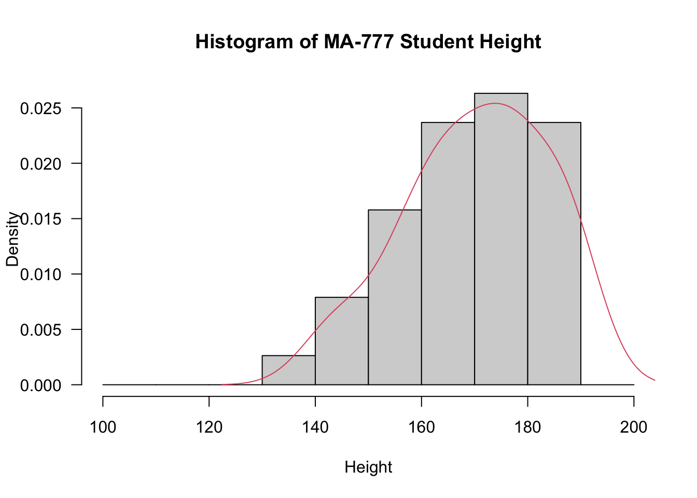
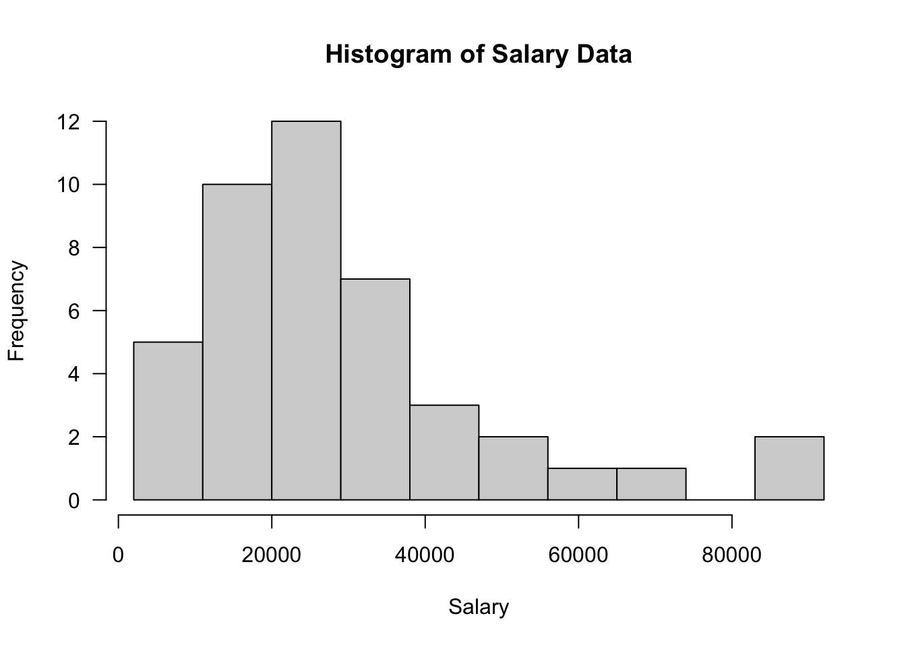
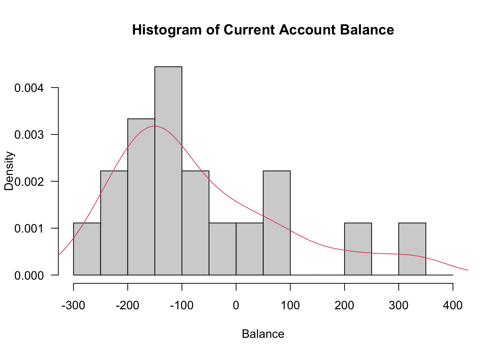

library(foreign)
Student <- read.spss("Student Age.sav", to.data.frame=T)Lab 1 - with solutions
Please note that there is a file on Canvas called Getting started with R which may be of some use. This provides details of setting up R and Rstudio on your own computer as well as providing an overview of inputting and importing various data files into R. This should mainly serve as a reminder.
Recall that we can clear the environment using rm(list=ls()) It is advisable to do this before attempting new questions if confusion may arise with variable names etc.
Example 1
This example will provide the full details of the confidence interval example we met in the lectures. We will create a confidence interval for the variable StudentAge in the Student Age dataset. Please follow the steps below:
- Firstly, we input the dataset into R, attach it and check it using the “head” command (recall that this provides the first 6 entries).
Or, if you prefer to search for the dataset file, use:
Student <- read.spss(file.choose(), to.data.frame=T)attach(Student)
head(Student) StudentAge
1 55
2 60
3 58
4 20
5 22
6 59- In order to determine the correct method, we test the normality of the data. We first do this visually - we first consider a basic histogram:
hist(StudentAge)
- The code below produces a histogram with an overlaid probability density function. Make sure you understand the code and the output generated.
hist(StudentAge, prob=T, breaks=seq(from=0,to=100, by=10), xlab="Student Age",
main="Histogram of Student Age", las=1)
lines(density(StudentAge),col=2)
- Next we perform the Shapiro-Wilk test and the Kolmogorov-Smirnov test (with Lilliefors’ correction). Note that we require the “nortest” package to use Lilliefors’ test.
shapiro.test(StudentAge)
Shapiro-Wilk normality test
data: StudentAge
W = 0.83438, p-value = 0.02367install.packages("nortest")library(nortest)
lillie.test(StudentAge)
Lilliefors (Kolmogorov-Smirnov) normality test
data: StudentAge
D = 0.25006, p-value = 0.03682- You should have come to the conclusion the the variable StudentAge is not normally distributed. Therefore, we cannot use traditional parametric techniques to produce confidence intervals (as seen in MA-192) and hence we use the bootstrap method. The code below is used to calculate the mean of each bootstrap sample and m.mean is just the name of the function to calculate the mean of each bootstrap sample with index i. We use the standard 1000 resamples. Note that we must use the boot package.
library(boot)
my.mean <- function(x, i){return( mean( x[i] ) )}
age.boot <- boot(Student$StudentAge, my.mean, 1000)- The code below is then used to produce bootstrap confidence intervals. Note the options, e.g. changing the significance level and specifying the type of bootstrap C.I. All three types of bootstrap confidence interval seen in the lectures are included below.
boot.ci(age.boot, conf=0.95, type=c("perc", "bca", "norm"))BOOTSTRAP CONFIDENCE INTERVAL CALCULATIONS
Based on 1000 bootstrap replicates
CALL :
boot.ci(boot.out = age.boot, conf = 0.95, type = c("perc", "bca",
"norm"))
Intervals :
Level Normal Percentile BCa
95% (35.10, 57.66 ) (34.92, 57.92 ) (33.87, 57.13 )
Calculations and Intervals on Original Scale- You should obtain an output similar to the one above in your Console, noting that bootstrapping is a random process so the actual intervals will vary.
Exercise 1
Create a 95% confidence interval for the BMI variable in the BMI Scores dataset. Firstly, test the normality of the data, and if a bootstrap confidence interval is required create both percentile and BCa bootstrap confidence intervals for the mean of BMI.
Hint: The dataset needs to be made R friendly and you need to think about how to import it into R. One way is to save it as a csv file and use the code: BMIScores<-read.csv(file.choose(), header=T)
Solution
- Note that this dataset will need to be “tidied” first.
BMIScores <- read.csv(file.choose(), header=T)head(BMIScores) Patient BMI
1 1 32
2 2 29
3 3 33
4 4 15
5 5 16
6 6 16attach(BMIScores)- We now visualise the data.
hist(BMI, prob=T, breaks=seq(from=0,to=100, by=10), xlab="BMI", main="Histogram of BMI Scores", las=1)
lines(density(BMI),col=2)
- Next we perform tests of normality.
shapiro.test(BMI)
Shapiro-Wilk normality test
data: BMI
W = 0.82976, p-value = 0.03324install.packages("nortest")library(nortest)
lillie.test(BMI)
Lilliefors (Kolmogorov-Smirnov) normality test
data: BMI
D = 0.27323, p-value = 0.03303- The output of the tests of normality above indicate that we should consider bootstrap confidence intervals
library(boot)
my.mean <- function(x, i){return( mean( x[i] ) )}
BMI.boot <- boot(BMI, my.mean, 10000)
boot.ci(BMI.boot, conf=0.95, type=c("perc", "bca", "norm"))BOOTSTRAP CONFIDENCE INTERVAL CALCULATIONS
Based on 10000 bootstrap replicates
CALL :
boot.ci(boot.out = BMI.boot, conf = 0.95, type = c("perc", "bca",
"norm"))
Intervals :
Level Normal Percentile BCa
95% (18.19, 27.01 ) (18.30, 27.10 ) (18.40, 27.20 )
Calculations and Intervals on Original ScaleExercise 2
Why would we not perform a bootstrap confidence interval on the variable Heightincm in the dataset MA-777 Student Height? Give the standard confidence interval for the mean of student height (use the code t.test("variable name", conf.level=0.95), as used in MA-192).
Hint: Another way to import Excel files into R is using the Import Dataset option.
Solution
- The dataset is currently an xlsx file, therefore use either method to import this file. I have used the “Import Dataset” feature.
attach(MA_777_Student_Height_1)The following object is masked _by_ .GlobalEnv:
Student- In the histogram below I adjust the breaks to make the histogram more presentable
hist(`Height in cm`, prob=T, breaks=seq(from=100,to=200, by=10), xlab="Height", main="Histogram of MA-777 Student Height", las=1)
lines(density(`Height in cm`),col=2)
- Now we perform tests of normality
shapiro.test(`Height in cm`)
Shapiro-Wilk normality test
data: Height in cm
W = 0.9614, p-value = 0.2107lillie.test(`Height in cm`)
Lilliefors (Kolmogorov-Smirnov) normality test
data: Height in cm
D = 0.084389, p-value = 0.7082- The visualistaions and tests above indicate that the data are normally distributed, therefore we do not use bootstrap methods. Instead we use standard techniques for confidence intervals, see below. The default option to create confidence intervals in R is the t confidence interval.There are a number of ways of doing this including
t.testin the package Rmisc.
t.test(`Height in cm`, conf.level=0.95)
One Sample t-test
data: Height in cm
t = 77.869, df = 37, p-value < 2.2e-16
alternative hypothesis: true mean is not equal to 0
95 percent confidence interval:
165.8841 174.7475
sample estimates:
mean of x
170.3158 Example 2
In this example we will investigate skewness of the variable Salary in the Salary (Skewness) dataset. Follow the steps below:
- Firstly, import the SPSS dataset into R and check the first 6 entries:
SalaryData <- read.spss(file.choose(), to.data.frame=T)or
SalaryData <- read.spss("Salary (Skewness).sav", to.data.frame=T)
attach(SalaryData)
head(SalaryData) Salary
1 22900
2 22500
3 23000
4 19500
5 19000
6 15200- One option to investigate skewness is to produce a histogram, but we should first take a look at the data to get a better idea of the range of values and what “breaks” we should use, see below:
SalaryData Salary
1 22900
2 22500
3 23000
4 19500
5 19000
6 15200
7 17000
8 19900
9 45000
10 60000
11 18100
12 10300
13 22250
14 22500
15 30200
16 33000
17 37000
18 20000
19 21500
20 50000
21 31200
22 27500
23 25300
24 26300
25 28250
26 5000
27 6200
28 36700
29 40200
30 23400
31 18700
32 19400
33 24000
34 72000
35 85000
36 5500
37 7000
38 15000
39 37500
40 92000
41 36000
42 42000
43 51100hist(Salary, prob=F, breaks=seq(from=2000,to=100000, by=9000),
xlab="Salary", main="Histogram of Salary Data", las=1)
- You should obtain the above output, indicating left-skewed data.
- Next we calculate the skewness statistic, for which we require the moments package.
install.packages("moments")library(moments)
skewness(Salary)[1] 1.515277- You should obtain the value 1.515 (to 3dp), as per the output above, providing further evidence of skewness (since the skewness statistic is \(>1\)).
Exercise 3
The Student Current Account Balance dataset contains the current account balance of 18 students at the end of term. Check the skewness of the variable Balance. Why is a bootstrap confidence interval appropriate in this case? Find a 95% BCa bootstrap confidence interval for the mean of Balance.
Hint: note that the sample size is small. Skewness of data suggests it is not normally distributed, but this can be double-checked using the usual tests.
Solution
- We first import the data.
CurrentAccount <- read.spss(file.choose(), to.data.frame=T)attach(CurrentAccount)
head(CurrentAccount) Balance
1 -154
2 -240
3 -10
4 5
5 -127
6 -140- We now check the skewness and perform tests of normality on the variable Balance
skewness(Balance)[1] 1.082313shapiro.test(Balance)
Shapiro-Wilk normality test
data: Balance
W = 0.89573, p-value = 0.04845library(nortest)
lillie.test(Balance)
Lilliefors (Kolmogorov-Smirnov) normality test
data: Balance
D = 0.20631, p-value = 0.04142- A histogram may also help:
hist(Balance, prob=T, breaks=seq(from=-300,to=400, by=50), xlab="Balance", main="Histogram of Current Account Balance", las=1)
lines(density(Balance),col=2)
Balance [1] -154 -240 -10 5 -127 -140 100 -55 -143 -132 -80 -165 67 -182 -215
[16] 210 -253 330- Since the data does not seem to be normally distributed we perform a bootstrap confidence interval (BCa) as requested in the question.
library(boot)
my.mean <- function(x, i){return( mean( x[i] ) )}
Balance.boot <- boot(Balance, my.mean, 10000)
boot.ci(Balance.boot, conf=0.95, type=c("bca"))BOOTSTRAP CONFIDENCE INTERVAL CALCULATIONS
Based on 10000 bootstrap replicates
CALL :
boot.ci(boot.out = Balance.boot, conf = 0.95, type = c("bca"))
Intervals :
Level BCa
95% (-124.72, 22.24 )
Calculations and Intervals on Original Scale